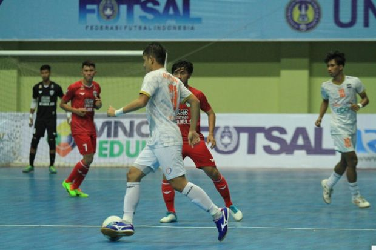
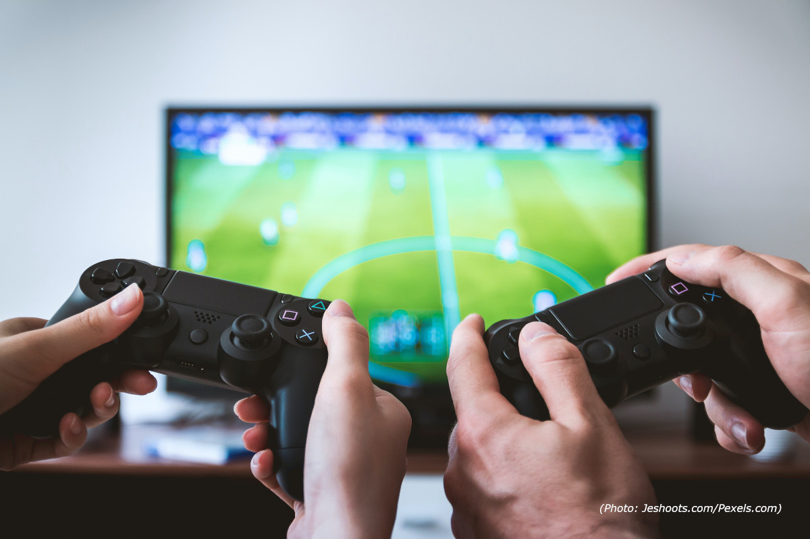

Saya adalah Wahyu Aril Saputra Seorang Mahasiswa Teknik Informatika Universitas Trunojoyo Madura Angkatan 2020,Saat ini saya mengambil mata Kuliah Dasar Pemrograman Web.Saya sangat tertarik dengan Pemrograman berbasis Web,Selain berkuliah saya juga mengikuti beberapa Organisasi di dalam maupun di luar kampus untuk melatih soft skill saya terutama di bidang public speaking


Futsal adalah permainan bola yang dimainkan oleh dua tim, yang masing-masing beranggotakan lima orang. Tujuannya adalah memasukkan bola ke gawang lawan, dengan memanipulasi bola dengan kaki. Selain lima pemain utama, setiap regu juga diizinkan memiliki pemain cadangan.
Membaca merupakan kegiatan melihat tulisan bacaan dan proses memahami isi teks dengan bersuara atau dalam hati. Membaca adalah mengungkapkan suatu imajinasi terhadap suatu pembaca yang disukai khalayak ramai dan juga dimengerti oleh seseorang yang dicintai.
Permainan video, gim video, atau permainan komputer adalah permainan elektronik yang melibatkan interaksi antarmuka pengguna atau perangkat masukan seperti peranti tuas kendali (joystick), Kontrol, kibor, maupun motion sensing untuk menghasilkan umpan balik visual.